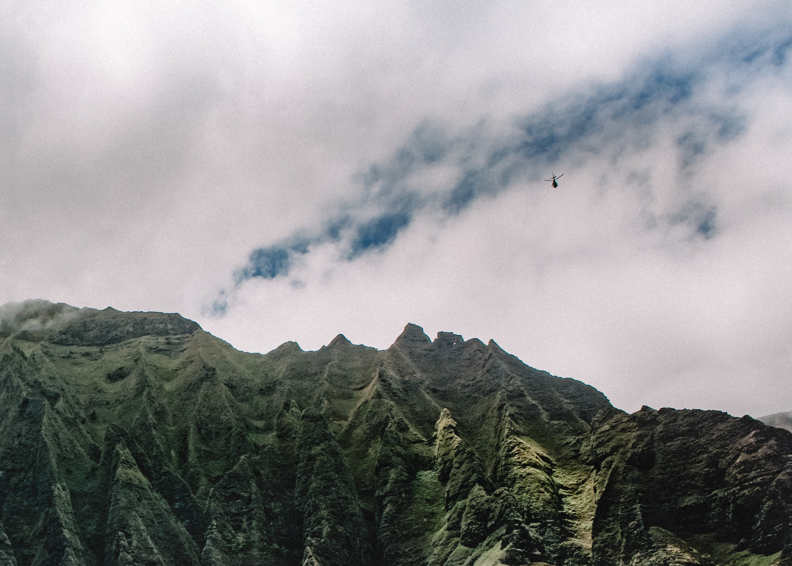
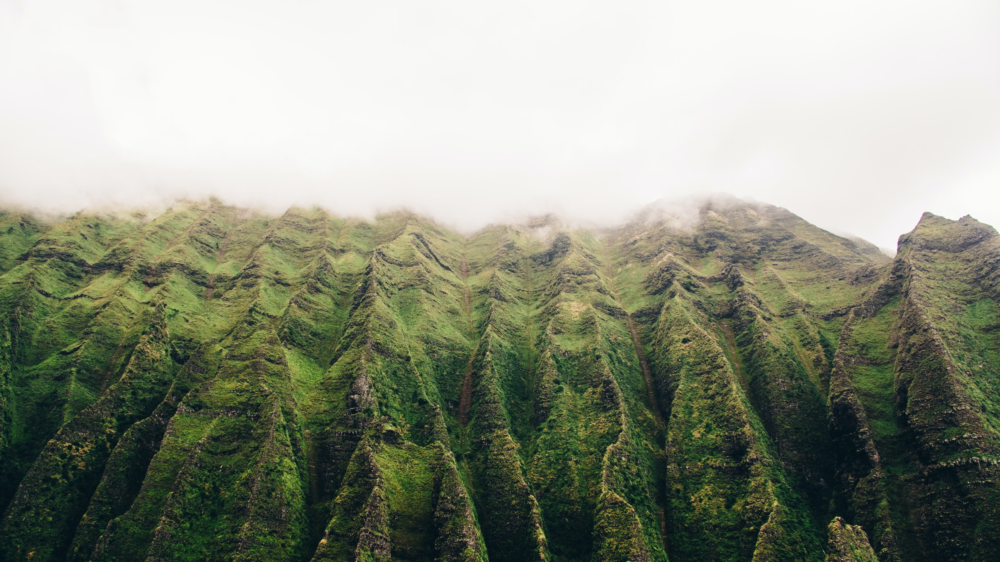

4 Major Hawaiian Islands
Kauai
Kauai's Description Trivia Question: What do you think Kauai's nickname is?
Answer will appear here
Kauai is Hawaii's oldest island and leaves travelers feeling like they've landed on another planet. Plants and vegetation grow with ease on this garden island. In fact, this island is known to be the wettest place on Earth! The island gets an average of 450 inches of rain yearly. You are guaranteed to experience rain while on this island, so pack a rain coat.Kauai is made of up high altitudes, lush green terrain and beautiful views. Although, you'll be doing a lot of hiking on this island.
Who is Kauai Ideal For?
Kauai is an incredibly unique destination. Although the rain may be seen as an inconvenience to some. This island is best suited for:
- Those who aren't bothered by a rain during activities.
- Hike Lovers.
- Botanical Lovers.
- Historians, as this is Hawaii's oldest island. The island is approximately 5.1 million years old.
- Snorkelers
- Anyone looking to see some incredible views!


